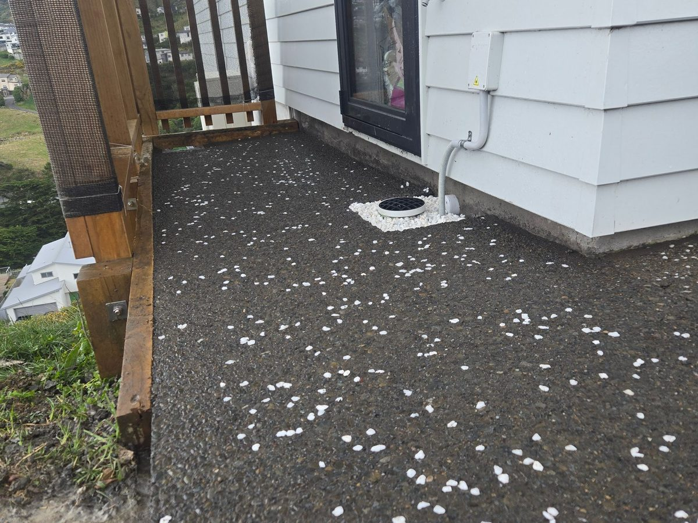

Concrete & exposed aggregate driveways in Porirua and Wellington
New driveways, replacements, patios, paths and slabs. We break out the old one, prepare the base, box it, mesh it and pour it with our own crew and gear. 100 mm minimum, 20 MPa, steel mesh. Every time.
Old slab removal on the same quoteFinish samples on siteWritten, itemised quote
Photo · Exposed aggregate driveway, Porirua
What we pour
Driveways, patios, paths and slabs.
Most of our concrete work is residential: a tired driveway replaced, a new patio off the lounge, a path down the side of the house. We also pour shed and garage slabs, foundations and the vehicle crossing out to the road. Same spec, same crew, whatever the size.
Driveways. New and replacement, single or double width, with turning bays and parking pads. We remove the old surface first.
Patios & courtyards. Outdoor living areas off the house, poured with a fall away from your walls so water drains the right way.
Paths. Side paths, garden paths and steps, so the wheelie bin and the lawnmower have somewhere solid to go.
Slabs & foundations. Shed, garage and sleepout slabs, footings and foundations, set out and levelled with our own gear.
Vehicle crossings. The strip between your boundary and the road, built to council requirements. We tell you what approval it needs before we start.
Finish options
Four finishes. Samples on your own driveway.
The finish changes the look, the grip and the price. We bring samples to the site visit so you choose in your own light, next to your own house.
PlainSmooth steel-trowel finish. The most affordable option and ideal for garages, slabs and side paths.
BroomPlain concrete brushed with a broom for texture. Good grip on sloping Wellington driveways for not much more.
ColouredOxide mixed through the concrete. Charcoals, greys and earthy tones to suit the house and the garden.
Exposed aggregateThe top skin is washed off to show the stone. Best grip in the wet, hides tyre marks and stains. Our most requested finish.
Our spec
Built to the code of practice, not the minimum.
These are the numbers that go in your quote. If a cheaper price is missing any of them, that's usually where the saving came from.
100 mmMinimum thicknessFor cars. 125–150 mm with heavier steel if a boat, campervan or truck will use it.
20 MPaConcrete strengthReady-mix concrete at 20 MPa or higher, not a weaker mix to save a few dollars.
665 meshSteel reinforcing665 or 668 mesh on chairs, sitting in the top third of the slab where it does its job.
3–4.5 mSaw-cut control jointsCut at regular spacings so shrinkage cracks run straight, inside the joint, where you don't see them.
7 daysBefore cars go on itWalk on it after 24–48 hours. Heavy vehicles stay off for longer.
28 daysTo full strengthConcrete keeps gaining strength for weeks. Keep it moist for the first 4 days so it cures properly.
How a driveway job runs
Most driveways take 1 to 3 days on site.
Plus curing time. Adam walks it with you before we start, during the job and at the end, so nothing drifts.
Break out & dig
Old concrete, asphalt or pavers broken out and carted away in our own truck. Ground dug to depth.
Base & boxing
Compacted basecourse, timber boxing set to falls, and drainage sorted so water runs off the right way.
Steel & pour
Mesh on chairs, 20 MPa concrete poured, screeded and finished to the sample you picked.
Cut, cure, walk-through
Control joints saw-cut, site cleaned, and care instructions so it cures properly.
Indicative pricing
What a concrete driveway costs in Wellington.
So you can budget before we visit. A vehicle crossing, stormwater work or a retaining wall are priced as separate lines.
Plain concrete
$130–190per m²
Steel-trowel or broom finish
100 mm+, 20 MPa, steel mesh
Coloured concrete
$150–220per m²
Oxide colour mixed through
Same base, steel and joints
Exposed aggregate
$160–240per m²
Choice of stone and colour
Better grip, hides stains
Typical 40–50 m² driveway
$6k–12kall-in
Removing an old slab adds $1.5k–4k
Sealing adds $300–600
Indicative Wellington-region ranges for 2026, GST inclusive. Not a quote. Access, slope, what has to come out first and the finish you pick all move the number. Your written quote is fixed.
Recent concrete work
Driveways we've poured lately.

Photo · Exposed aggregate, WhitbyPhoto · Driveway replacement, Island Bay
Keith had an exposed aggregate driveway poured at his Porirua home. Three walk-throughs with Adam (before, during and after) meant everyone was aligned from start to finish.
“The exposed aggregate job they completed at my home is nothing short of spectacular. From the first conversation Adam made everything feel easy and transparent, and the three walk-throughs meant we were always aligned.”
KNKeith N.Porirua · Exposed aggregate
Good to know
Concrete driveway questions, answered.
How thick should a concrete driveway be?
At least 100 mm for cars, with 20 MPa or stronger concrete and steel mesh (665 or 668) sitting in the top third of the slab. If a boat, campervan or truck will use it, we go to 125–150 mm with heavier reinforcement.
When can I drive on my new driveway?
You can walk on it after 24 to 48 hours. Keep cars off for at least 7 days, and heavy vehicles off for longer. Concrete reaches its full design strength at around 28 days. Keep it moist for the first 4 days so it cures properly; we show you how.
Do I need council approval for a vehicle crossing in Porirua?
A driveway on your own land usually doesn't need a building consent. A new or altered vehicle crossing (the strip between your boundary and the road) does need Porirua City Council approval, and you need a Corridor Access Request before work starts in the road reserve. Porirua City Council limits crossings to 3 m wide for a single garage or 4.5 m for a double, at least 1 m from street furniture like poles and signs, and a crossing shared by more than two properties has to be heavy-duty. We check what applies to your address at the site visit.
Why does concrete crack, and can you stop it?
Concrete shrinks as it cures, so some cracking is normal. We saw-cut control joints roughly every 3 to 4.5 m so the slab cracks in a straight line inside the joint, where you won't notice it, instead of across the middle. A well-compacted base and mesh in the right place keep any cracks tight.
Exposed aggregate or plain concrete?
Exposed aggregate costs more per square metre (from about $160 against about $130 for plain), but it grips better in the wet, hides tyre marks and stains, and stays looking sharp for longer. It's our most requested finish. We bring samples to the site visit so you can see the stone and colour on your own property.
Do you take out the old driveway?
Yes. We break out and cart away old concrete, asphalt or pavers with our own digger and truck, then prepare the base. Removing an old slab typically adds $1,500 to $4,000 depending on size and thickness, and it's a separate line on your quote.
 Photo · Exposed aggregate driveway, Porirua
Photo · Exposed aggregate driveway, Porirua